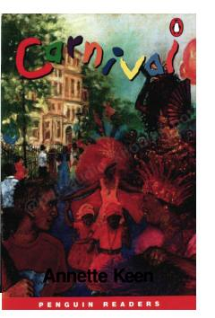

CLondondagi Notting Hill karnavalida yuz bergan romantik sarguzasht haqidagi hikoya.
Manchesteralik o'n sakkiz yoshli Jeyk ismli yigit Londonga birinchi marta tashrif buyuradi. U Notting Hill karnavalida qatnashayotganda Mariya ismli qizni uchratib qoladi va bir ko'rishda sevib qoladi. Ushbu hikoya yosh yigitning sarguzashtlari va kutilmagan muhabbat qissasi haqida.